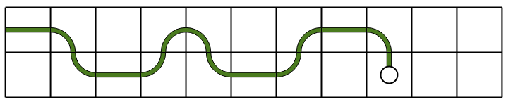

Kodade vägar
En väg i rutnätet kan kodas som en följd av tal.
Prova dig fram för att förstå vad de olika talen betyder, och rita ut vägen som ger den önskade talföljden.
Dra eller klicka på rutorna för att utöka eller minska vägen.
En väg i rutnätet kan kodas som en följd av tal.
Prova dig fram för att förstå vad de olika talen betyder, och rita ut vägen som ger den önskade talföljden.
Dra eller klicka på rutorna för att utöka eller minska vägen.
Vägen beskrivs som en sekvens av siffror enligt följande:
Sekvensen 0 1 0 0 1 0 1 motsvarar t.ex. förflyttningar åt höger, ner, höger, höger, upp, höger, ner.
Den väg som beskrivs av den önskade talföljden ser ut så här:
Vägen beskrivs som en sekvens av siffror på följande sätt:
Sekvensen 1 2 3 2 1 1 0 motsvarar t.ex. förflyttningar åt höger, ner, vänster, ner, höger, höger, upp.
Den väg som beskrivs av den önskade talföljden ser ut så här:

Vägen beskrivs som en serie siffror på följande sätt:
Sekvensen 0 0 1 0 2 2 0 motsvarar t.ex. instruktionerna gå framåt, gå framåt, sväng höger, gå framåt, sväng vänster, sväng vänster, gå framåt.
Den väg som beskrivs av den önskade talföljden ser ut så här: